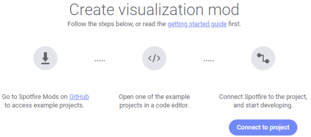
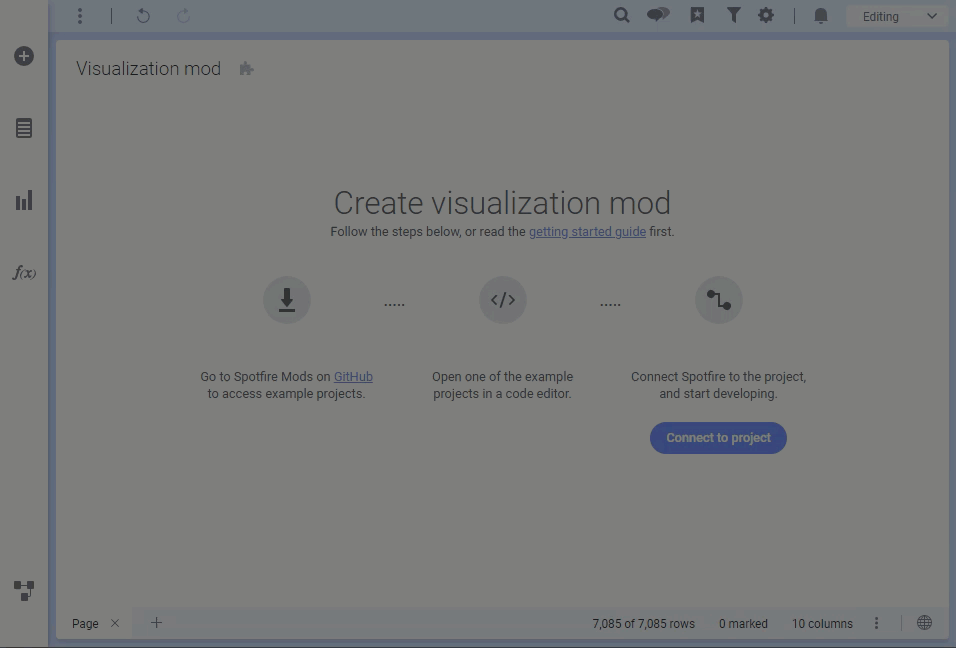

Reading time: 8 minutes and 45 seconds.
Getting started
Developing a visualization mod
Spotfire® Mods is a framework to create interactive visualizations in TIBCO Spotfire®. It is based on web technologies and it runs in a sandboxed iframe.
Prerequisites
-
A running instance of Spotfire.
This is needed to develop and test a mod. Development can be done against the installed client (TIBCO Spotfire® Analyst) or the web client (TIBCO Spotfire® Business Author) using the Google Chrome web browser. See Development in the Spotfire web client below for more details. -
A code editor.
It is highly recommended to use Microsoft Visual Studio Code (VS Code) when developing a mod. The instructions in this document assume that VS Code is used as code editor. The mod example projects that are available for developers, include predefined settings for VS Code that enable a default build task, IntelliSense in the mod manifest, and IntelliSense in the JavaScript code. -
Node.js installed.
To enable live updates when developing a mod, a set of tools based on Node.js is needed. The mod example specifies a set of development dependencies in its package.json file. These are installed when executingnpm installin the same directory as the package.json file. The install script is also executed as part of the default build task in VS Code.
 Note: When you obtain third-party software or services, it is your responsibility to ensure you understand the license terms associated with such third-party software or services and comply with such terms.
Note: When you obtain third-party software or services, it is your responsibility to ensure you understand the license terms associated with such third-party software or services and comply with such terms.
Getting started
1. Create an empty visualization mod in Spotfire
Open Spotfire and load some data. Go to Tools > Development > Create visualization mod. This will create an empty mod.

2. Start from a mod example
Click here to access the example mod projects to start the development from. Extract the zip archive locally. The extracted zip archive contains examples of mods, using the mod API in different ways.
-
js-dev-barchart
To get familiar with mod development, start with this example containing a simple bar chart. This is the example that will be used in the following sections of this getting started guide. -
js-dev-starter
This example can be used as a starting point for any new mod. -
js-dev-starter-ie11
This example can be used as a starting point for any new mod that is also compatible with the IE11 browser. -
js-dev-barchart-googlecharts
This example is a basic bar chart that is built using the Google Charts library. The tutorial covers the steps taken to create this bar chart from scratch. -
ts-dev-gauge-googlecharts
This is an example of a gauge visualization that is developed in TypeScript using the Google Charts library and bundled with Rollup. -
js-dev-circular-treemap
This example is a simple circular treemap built using the D3 library. It shows how hierarchies in mod data views can be mapped to D3 hierarchies. Some basic concepts such as using a color axis, and implementing marking and tooltips are covered as well. -
js-areachart-d3
This is a more complex example built using the D3 library, where you can see how the API can be used to take advantage of a lot of features in Spotfire.
Each example contains a README file with detailed instructions specific to the example.
3. Start local development server
To use the js-dev-barchart example, open the js-dev-barchart folder in VS Code. Select Terminal > Run Build Task. This will install necessary development dependencies and start a local web server (the task is defined in the .vscode settings folder). The task launches a URL to the mod manifest in your web browser.
If you are not using the VS Code editor you can start the development server by navigating to the js-dev-barchart folder in a command line tool. The first time you are building this example, type npm install and press Enter. This will install necessary development dependencies. Skip this step on any subsequent builds. Type npm run server and press Enter. This will start a local web server and open the mod manifest in your web browser.
4. Connect Spotfire to the development server
Switch over to Spotfire and click the Connect to project button. In the pop-up that opens, click Development server. Make sure the displayed URL matches the launched URL in your browser, and then click the Connect button. This will make Spotfire navigate to your local server and serve files from your src folder.

If a visualization appears, it means that Spotfire has successfully connected to the development server.
5. Start editing your example
Now switch over to VS Code to start editing the mod implementation.
The src folder includes HTML, CSS and JavaScript files that together form the mod implementation. It also contains a mod-manifest.json file that contains metadata about the mod. If any .html/css/js file in the src folder is changed while the development server is running, the mod will be reloaded in Spotfire.
As an example, open the main.css file and try to change the background property of body. As soon as the css file is saved, the change will appear in Spotfire.
For information about how the Spotfire Mod API is accessed, open the main.js file.
Mod example folder structure
The following files and folders are part of the example:
| File | Description |
|---|---|
| .vscode | Settings for VS Code. |
| spotfire | Files related to the mod API. |
| src | Folder for the mod’s source code. |
| development-server.js | A node.js script that starts a development server. |
| package.json | Lists the Node.js dependencies and necessary scripts. |
| prettier.config.js | Configuration file for formatting with the tool prettier. |
| README.md | Instructions on how to get started. |
| tsconfig.json | TypeScript project file. It links the /spotfire/spotfire-api.dts file for IntelliSense in your code. |
The mod-manifest.json file
All metadata that concerns the mod is defined in a file called mod-manifest.json. It is used to give the mod a name and an id, and to define axes and their placement. It is also used to list all files used by the mod. Only files listed in the ‘files’ property will be embedded by Spotfire.
For changes in the manifest to take effect, the manifest must be reloaded manually in Spotfire. Click the puzzle icon on the title bar of the visualization mod, and then click the Reload manifest button in the popup that opens.
Debugging
The mod can be debugged via the Developer tools in Spotfire. These tools are the same as the tools used by Chrome. To access the Developer tools, use the following keyboard commands. In Spotfire® Analyst: Ctrl+Alt+Shift+F12 In Spotfire® Business Author: F12
To find the main.js file, use the Open file command (Ctrl+P) and type the file’s name. In the opened file, it is possible to set breakpoints. It is also possible to execute code in the console. More information about Chrome DevTools can be found here: https://developers.google.com/web/tools/chrome-devtools
Development in the Spotfire web client
The required browser when developing mods against the web client is Google Chrome. This is due to how browsers behave with regards to loading http content from a https context. The development server is serving files from http://127.0.0.1:8090, which according to the W3C specification is a potentially trustworthy origin. Currently only Chrome behaves correctly with regards to this. Other browser vendors are implementing support for this and might work in the future.
Note also that when developing a mod in the web client, it is only possible to develop via a development server. Web browsers lack the file access that is needed to read files from a mod-manifest, which means that the Browse button will not be available in the web client.
Embedding the mod and saving to the library
When the development is done, disconnect from the server to embed the mod in the analysis.

Saving the mod to the Spotfire library
When your mod has been embedded in the analysis, you can share the mod with others by saving it to the library.
- Click the puzzle icon in the title bar to open the development popup.
- Click Save to library.
- In the dialog that opens, navigate to the folder where you want to save the mod, and click Save. When the mod has been saved to the library, it is possible for others, connected to the same library, to use your mod in their analyses. The mod can also be pinned to the visualization flyout.
FAQ
How do I use types in JavaScript files?
Even though JavaScript lacks type support, it is possible to get a long way with the help of JSDoc comments. The TypeScript language service in Visual Studio Code can parse JSDoc type comments and provide IntelliSense when using the Spotfire mods API. The following snippet defines the variable dataView as an instance of Spotfire.DataView.
/** @type {Spotfire.DataView} */
let dataView;
This can be useful in cases where the API allows generic types, such as a continuous value:
/**@type {Spotfire.DataViewContinuousValue<number>} */
let y = row.continuous("Y");
The same would have been done in TypeScript like this:
let y = row.continuous<number>("Y");
Why don’t changes to the mod-manifest.json file take effect in my analysis?
The manifest is used by Spotfire to generate the underlying model for the mod. The model is generated each time the manifest is read by Spotfire. Spotfire only reads the mod manifest when the development server is connected, disconnected or when the Reload manifest button is clicked.
When the development server is in a connected state, Spotfire points the mod iframe’s source directly against the development server. Any UI changes seen while the server is connected are not stored in the Spotfire document. To save the current state of the mod in the document, reload the mod manifest manually.
Solution: Reload the manifest via the development popup.
Why can’t I make an ajax call to read an embedded resource?
A mod is executed inside a sandboxed iframe. A sandboxed iframe sets the origin header to ‘null’ for any ajax request. This means that the server must be configured to handle Cross-Origin Resource Sharing (CORS). The server should allow 'null' or * in order to serve a request made from a mod. The Spotfire runtime does not accept CORS requests and will therefore not serve any request made from a mod, even though it might be for an embedded resource in the mod itself.
Linked scripts, images and CSS files do not rely on CORS to function and can be linked to. Font files rely on CORS and can therefore not be linked to. To get a font working inside the mod a data uri can be used.
Why is an external resource not loading correctly due to a content security policy?
Mods are covered by a strict content security policy by default. The mod is only allowed to load embedded resources and any external resource request is blocked. A mod can declare a set of external resources in the mod-manifest.json to unblock these resources from being loaded.
Note: A visualization mod with external resources cannot be exported using the web client.
Why doesn’t live reload work?
If the live reload feature does not work when using the development server, try disabling the network cache in the Chrome Developer tools. Open Chrome developer tools (Ctrl+Shift+I) and go to the Network tab, then select the Disable cache checkbox.
Feedback
Was this page helpful?
Glad to hear it! Please tell us how we can improve.
Sorry to hear that. Please tell us how we can improve.